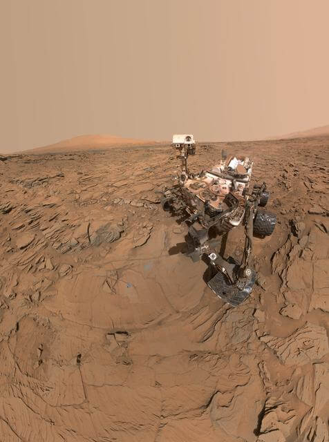

About the Mission
NASA has launched several robotic rovers to explore Mars, but two of the most iconic missions are the Opportunity and Curiosity rovers. These missions expanded our understanding of Mars' geology, climate, and potential for life.

Opportunity Rover
Operated from 2004 to 2018, traveling 28 miles across Martian terrain.

Curiosity Rover
Active since 2012, exploring Mount Sharp and analyzing Martian soil.
🚀 Mars Rover Timeline
- 2003
Opportunity Rover Launched - 2004
Opportunity Lands on Mars - 2012
Curiosity Lands in Gale Crater - 2018
Opportunity Mission Ends - Ongoing
Curiosity Continues Exploring